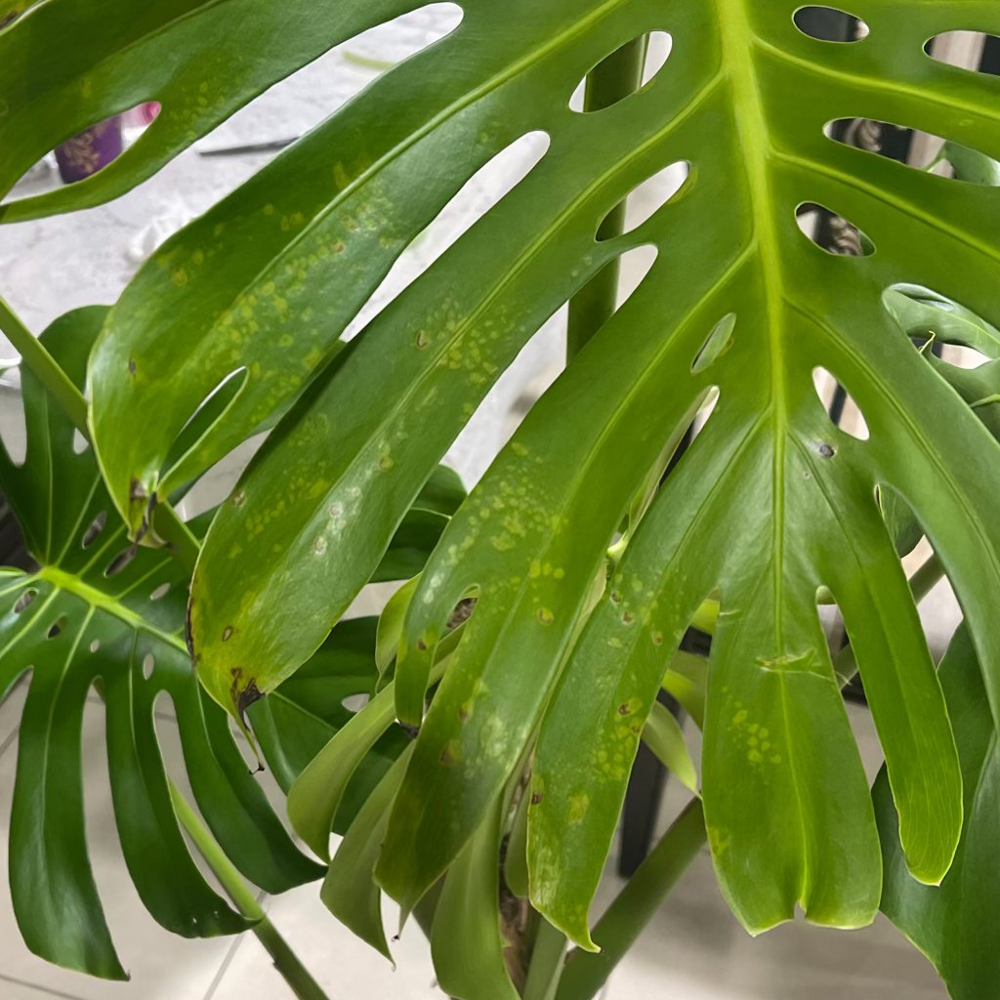

danos por pesticidas
O que você está vendo
Manchas irregulares, queimaduras e deformações em folhas novas logo após uma aplicação; em casos severos, queda de folhas.
Descrição
Fitotoxicidade: reação da planta a dose/concentração inadequada, mistura incompatível, aplicação sob sol/calor ou sensibilidade da espécie.
É um problema real?
Sim, mas muitas plantas se recuperam com manejo correto.
Como confirmar
- Relação temporal: dano surge 24–72 h após a aplicação.
- Áreas mais expostas à pulverização são as mais afetadas.
Causas prováveis
Dose alta, pulverização sob luz forte/calor, mistura com adubos foliares, sensibilidade específica.
O que fazer agora
- Enxágue a folhagem em baixa luz.
- Suspenda novas aplicações e evite podas drásticas.
- Em futuras aplicações, teste em uma folha e siga o rótulo estritamente.
Prevenção
Aplicar em horários frescos, usar doses corretas e evitar misturas não recomendadas; teste local em plantas sensíveis.
Imagens
